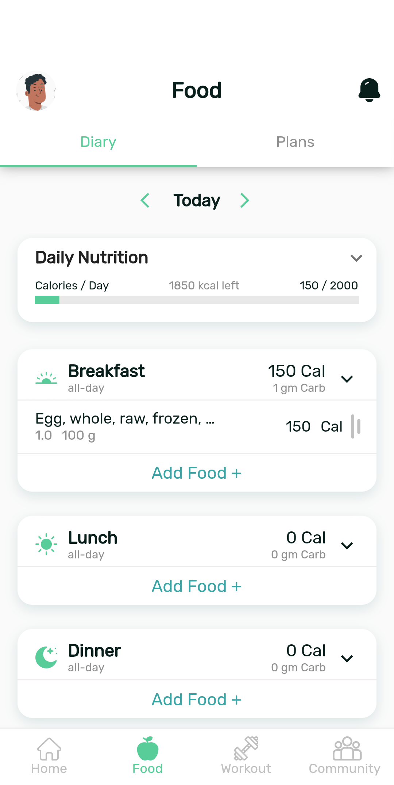
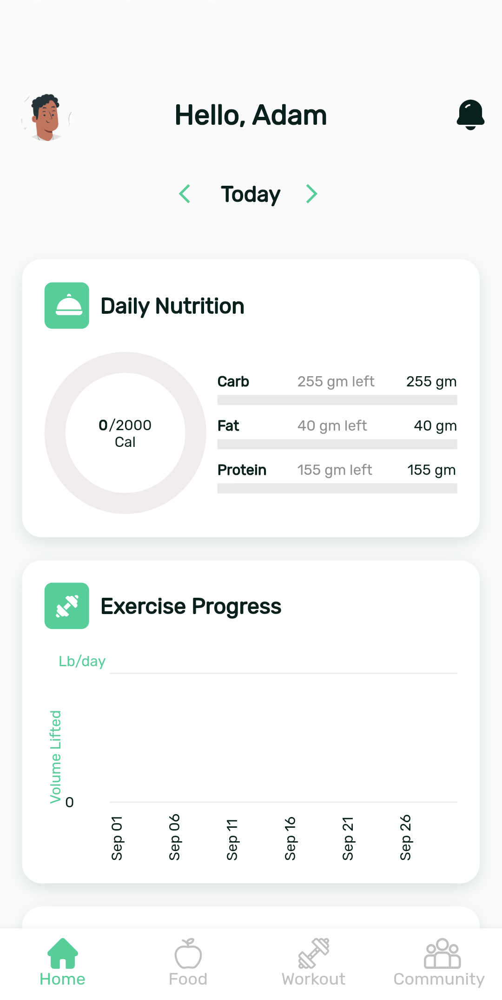
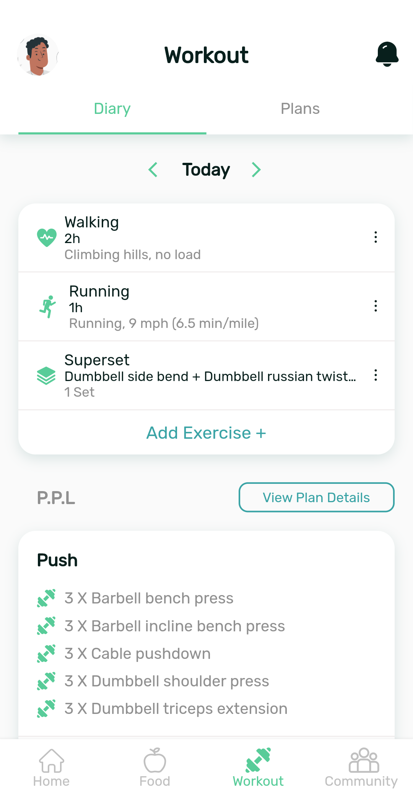
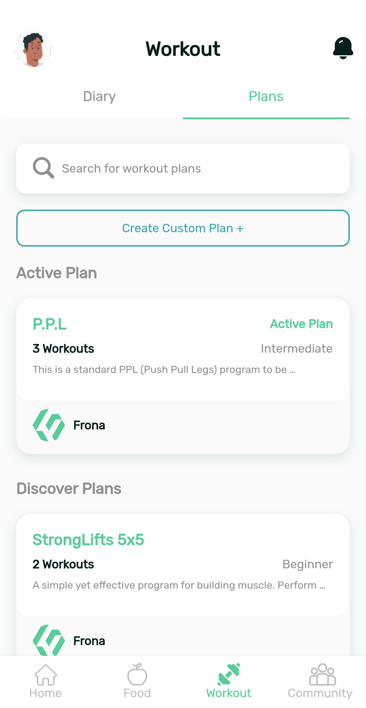
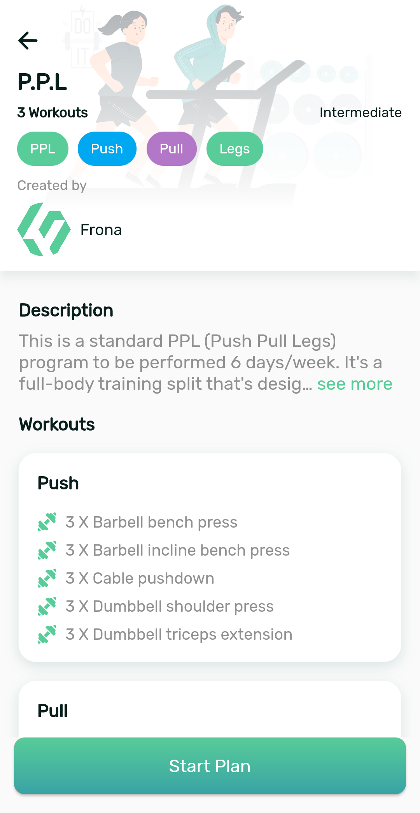

Software engineer building products end to end, and researching how LLMs can make software genuinely useful.
Cross-Platform Mobile Full-Stack & Firmware LLMs & AI Research
Flutter
LLMs
PyTorch
Firebase
Node.js
Arduino
Riverpod
Docker
RAG
Projects
Hover a project — or scroll across the row — to bring it into focus.
Volunteer Service Management App
Solo Project · Production App Live on Google Play
FlutterFirebaseRiverpodCloud Functions
Built solo, from scratch, for a volunteer organization in Egypt: a bilingual
(Arabic/English) app that organizes records of the visually impaired and elderly
community members served, plus volunteers, groups, and announcements.
Role-based access with admin approval flows, audit logging, timezone-aware push
notifications (FCM + Cloud Functions), and compressed, cached image handling on
Firebase. Live on Google Play. The full right-to-left Arabic interface is a
first-class citizen, not an afterthought.
The admin dashboard on a tablet — the same codebase adapts to larger screens,
with service groups organizing the people served.
IncidentAid
EPIC Lab, Santa Clara University · Emergency Response Platform
FlutterFirebaseRiverpodGoogle MapsBLE
An incident-reporting and response-coordination app for firefighters, built at
Santa Clara University's EPIC Lab — primary lead developer.
Rebuilt from its earlier native versions into a single cross-platform Flutter app and
redesigned end to end: new UI/UX prototyped in Figma, Riverpod state management, a
repository-pattern data layer, a migration from Firebase Realtime Database to Firestore,
and role-based dashboards and navigation. Integrated Google Maps/Places, BLE beacon
scanning, and real-time alert flows, with isolated prod/dev Firebase environments.
Two-minute demo: PAR check-ins and Mayday flows propagating live across an iPhone
simulator, an Android phone, and a command tablet, all running against the same backend.
Hydration Automation
EPIC Lab, Santa Clara University · Agricultural IoT Platform
FlutterNode.js/ExpressArduino C++LoRaNFC
An IoT platform for real-time monitoring of agricultural hydration systems,
built at Santa Clara University's EPIC Lab.
Full-stack development across every tier: cross-platform Flutter app (NFC and QR device
onboarding, real-time sensor dashboards, localization), embedded firmware (Arduino/C++
on SAMD21 with LoRa: ACK-gated queueing, NTP clocks, telemetry), Express backend with
magic-link authentication, and the responsive public website localized in two languages with light/dark themes.
The same Flutter codebase runs as a native macOS desktop app with a responsive
wide-screen layout — shown in light and dark themes.
BeyondList
Personal Project · Real-Time Collaborative App
FlutterFirebaseSpring BootOAuth2/JWTPostgreSQL
A real-time collaborative shopping-list and expense management application for households and families — engineered across two distinct backend architectures to compare serverless cloud sync against self-hosted Java microservices.
Features real-time item check-offs, collaborative household list sharing, expense splitting, and offline-first local caching to guarantee instant UI responsiveness even without active network access.
Dual-Stack Architecture: Built initially as a serverless Flutter + Firebase architecture using Firestore real-time listeners, then re-architected with a custom Java Spring Boot REST API backed by Spring Security (OAuth2 / JWT authentication), Spring Data JPA, and a PostgreSQL relational database.
Frona Tech Startup · Released on App Store & Google Play
FlutterScalagRPCAWSDockerPostgreSQL
Co-founded Frona Tech and served as Lead Software Engineer, taking a full-stack, cross-platform diet and fitness platform from initial architecture to production releases on both the App Store and Google Play.
Key Features: Custom diet & macro engine (Keto/Paleo with barcode scanning), real-time workout trainer mode (supersets, rest timers & lift progression graphs), and influencer plan sharing.
Architecture: Cross-platform Flutter mobile clients backed by Scala microservices over high-performance gRPC APIs, containerized with Docker on AWS.





Research
Hover a topic — or scroll across the row — to bring it into focus.
MedicalQA — Caregiver QA Generation & Evaluation
AIM Lab, Santa Clara University · ongoing
LLMsRAGReact/ViteSupabase
Family caregivers of people with dementia rarely have time to sit through hours of
training videos. We're building MedicalQA — an LLM system that generates caregiver
question–answer pairs directly from dementia-care training videos, so the guidance
in them becomes searchable and conversational — by extending the AIM Lab's
MentorQA framework.
Generation quality is compared across several pipelines: a single-agent baseline,
multi-agent chunking, topic segmentation, and retrieval-augmented generation.
My contributions: I brought in the Teepa Snow dementia-care video dataset,
added reproducibility controls (seeding, temperature, and decoding configuration)
so pipeline comparisons are apples-to-apples, and built the human-annotation web
app (React/Vite + Supabase, deployed on Netlify) where annotators rate the
generated QA pairs, with every judgment stored in Supabase for analysis. I then
analyzed the judgments collected over the supported training videos to validate
the evaluation rubric itself.
McMiner — Misconception Mining for LLM Code Tutoring
Graduate research with the AIM Lab, Santa Clara University · Catherine Awad, Ruiwen Guan, Hanieh Hedayati (Advisor: Dr. Oana Ignat)
LLMsMisconception Miningpass@kEvoCodeBenchPython
Traditional LLM code tutors suffer from over-tutoring (giving away answers too early)
or vague hinting that wastes rounds. McMiner addresses this by introducing an active,
"misconception-in-the-loop" diagnostic framework: the tutor poses diagnostic code
scenarios, mines the student's specific underlying error pattern, and batch-injects
the misconception into subsequent prompt context so every hint directly targets the root flaw.
Evaluated using pass@1/5/10 across task difficulty tiers on the EvoCodeBench benchmark,
McMiner achieved significant accuracy gains — boosting Easy tasks (+9.4% pass@1) and
High-level student models (+5.2% pass@5) while reducing overall hint rounds needed to reach correct solutions.
To run multi-round benchmark evaluations, a fault-tolerant GPU harness was built with auto-pause/resume controls across server outages. An interactive side-by-side dialogue replay web app was also developed, featuring a live mode for running fresh sessions against real LLM APIs.
Medical Anomaly Detection with Vision-Language Models
Four-person team project
CLIPMVFALoRAPyTorch
Labeled medical imaging data is scarce, so we asked how much anomaly-detection
performance a general vision-language model can deliver on chest X-rays with only
a handful of labeled examples. We implemented and extended the MVFA (Multi-level
Visual Feature Adaptation) framework on top of CLIP (ViT-L/14): images and medical
text prompts are embedded into a shared space, and anomaly scores come from
comparing image features against descriptions of normal and abnormal findings.
Experiments ran on the RSNA pneumonia dataset (~29k chest radiographs, filtered
to a 17k-image benchmark), evaluated with AUROC across zero-shot and
2/4/8/16-shot regimes.
We ran sixteen controlled configurations to isolate what actually helps under
scarce supervision: adapter regularization, medical-domain prompt ensembling,
LoRA injected into the final ViT blocks, a lightweight MLP that regresses anomaly
scores directly from visual features, and a calibrated three-score fusion of
cosine similarity, Mahalanobis distance, and energy scoring. My focus was the
scoring side — implementing the anomaly-scoring methods and improving performance
through score fusion and regularization.
The experiments revealed a clean scaling picture: heavy regularization wins at
2-shot, learned score fusion at 4-shot, and direct MLP scoring dominates from
8-shot up — peaking at 0.884 AUROC at 16-shot, ahead of the original MVFA paper's
reported results. All experiments ran on NVIDIA V100s on the university's WAVE
HPC cluster, so there is no public repo; the report below holds the full
experiment matrix.
Full Research Report (PDF)
TTS & Voice Imitation
B.S. graduation thesis (team of six), Alexandria University · 2019
Tacotron 2Speech SynthesisDeep Learning
A neural text-to-speech system that generates speech in the voice of different
speakers — including speakers never seen during training. The system consists of
three separately trained models built around a Tacotron 2 synthesizer: it takes
text plus a reference voice and produces speech in that voice. We also built a
simple app to interact with the model.
Beyond the English models, we added an Egyptian-dialect Arabic dataset and
fine-tuned the system to generate realistic Arabic speech — a language where
dialectal TTS training resources are scarce. Expand below to view presentation slides and thesis report.
Presentation Slides & Voice Samples
Graduation Thesis (PDF)
Experience
AI Research Assistant — AIM Lab, Santa Clara University
May 2026 – Present
Researching LLM generation and evaluation systems for dementia-caregiver QA benchmarks and misconception-in-the-loop programming tutors.
Built fault-tolerant GPU evaluation harnesses on EvoCodeBench across multi-hour outage risks.
Developed human-annotation web tools (React/Vite + Supabase) for rating generated QA pairs.
Software Engineering Research Assistant — EPIC Lab, Santa Clara University
2025 – Present
Developing real-time IoT and emergency-response platforms for agricultural and first-responder applications.
Lead developer on Hydration Automation (Flutter, Node.js/Express, LoRa, NFC, Arduino C++).
Primary engineer on IncidentAid (Flutter, Firebase, BLE beacon tracking, offline map tiling).
Co-Founder & Lead Engineer — Frona Tech, Egypt
2021 – 2023
Co-founded a mobile technology startup and led product development from concept to store deployment.
Managed a team of four engineers across mobile frontend, backend APIs, and UI/UX design.
Built cross-platform Flutter applications published live on Google Play & App Store.
Teaching Assistant — Alexandria University
2019 – 2020
Taught undergraduate Computer Science classes and led weekly laboratory sessions.
Conducted lab sessions for Programming in C/C++, Design & Analysis of Algorithms, and Operating Systems.
Education
M.S. Computer Science & Engineering — Santa Clara University
Jan 2025 – Dec 2026 (exp.)
GPA: 3.87 · Focus on AI/LLM Systems, Mobile Software Engineering, and IoT. Directed research with AIM Lab & EPIC Lab.
B.S. Computer & Communications Engineering — Alexandria University
2019
Graduation Thesis: Neural Text-to-Speech & Voice Imitation using deep learning and Tacotron 2.
Skills
Languages
JavaPythonDartScalaC / C++JavaScriptSQL
Frameworks & Libraries
FlutterSpring BootNode.js / ExpressPyTorchscikit-learnHugging Face
Spoken languages Arabic (fluent) · English (fluent)
Beyond code
15+ Years Community Leadership
I've volunteered for 15+ years supporting elderly individuals, orphans, and community members with disabilities in Egypt. Since 2020, I’ve led volunteer training and operational coordination at the same organization — which directly inspired me to build the custom Volunteer Service Management App featured in my projects above.
“The best software I’ve shipped is the kind my own community depends on every single day.”